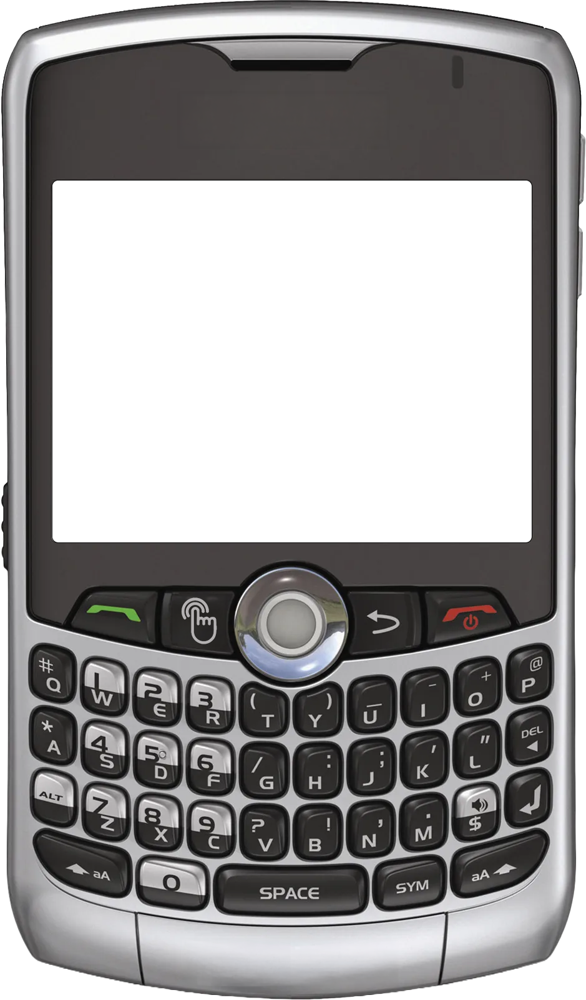
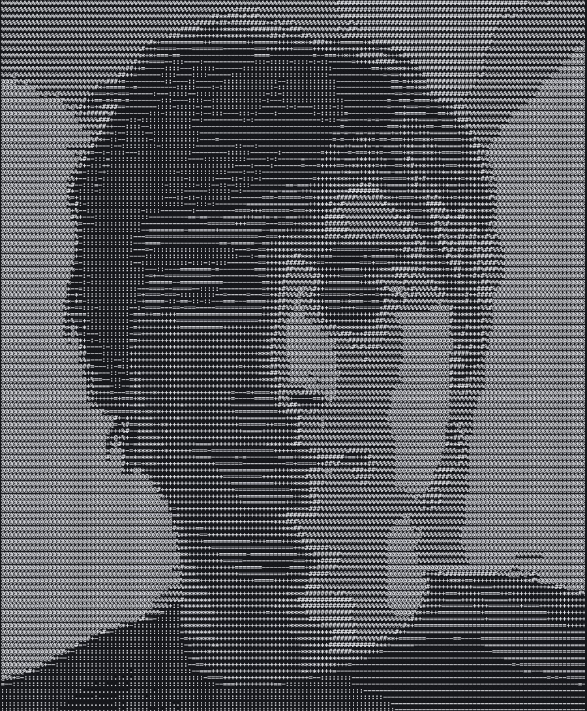
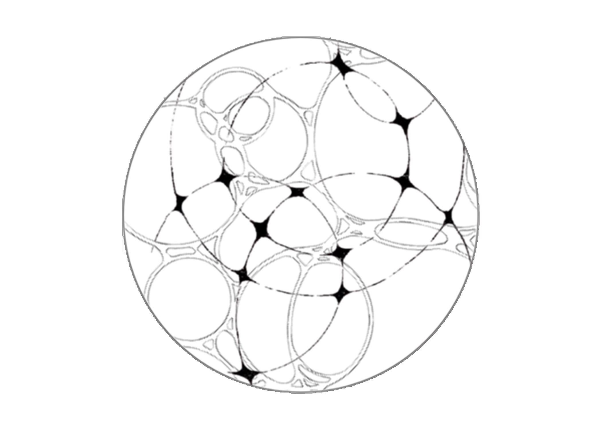
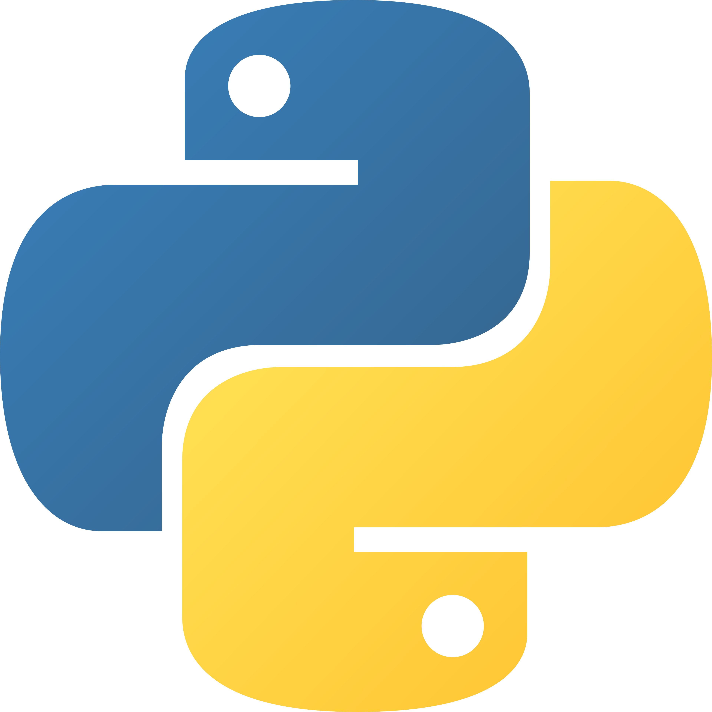

projects
 GitHub
GitHub
LinkedIn

GitHub
I'm Branden, a data science and CS student at UC Santa Barbara maintaining a 3.9 GPA. I believe the best tech brings people together, and I build end-to-end to prove it. I shipped a creator monetization tool that uses ML to detect and clip the most engaging moments into ready-to-post content, virtual 360° trail tours that got hundreds of people outside exploring the Bay Area, and an ad platform that turned viewer attention into $5k+ for charity, pitched from scratch and backed by a UCSB microgrant. I'm looking for backend, data science, and AI/ML roles where moving fast is rewarded and ownership is real.
I believe, the most interesting engineers are interested in everything. Skating, playing drums, and gardening keep me curious, refreshed, and give me new ways to think through problems.
Feel free to reach out if there’s an opportunity to collaborate, for work, or to build something meaningful.


Built an end-to-end content monetization tool that lets creators turn raw Twitch and Kick streams into platform-ready clips automatically. Rather than paying for an off-the-shelf editing service, built the processing pipeline from scratch with FFmpeg, keeping costs near zero. ML models detect highlight moments, auto-crop for each platform's aspect ratio, and queue content for publishing — so creators stay focused on creating, not editing. Tested with real small creators before open sourcing.
Built and launched a platform that converts ad spend into charitable donations — advertisers set their own CPM, users voluntarily watch, and 100% of net revenue goes to a weekly verified nonprofit. Pitched the concept, landed a UCSB microgrant, recruited brands like Poppi as advertising partners, and grew to 50 concurrent active users and $5k+ raised for charity.
Node.js | PostgreSQL | Stripe | FFmpeg | Cloudflare R2 | Vercel | Neon | Cron Jobs
A trail discovery app built to get people outside. Shipped to the App Store with 100+ downloads, featuring embedded 360° virtual tours so hikers can preview trails before committing. Built the full stack with my brother — from Mapbox offline maps to a Supabase backend with PostGIS for geo-queries.
React Native | Next.js | Supabase | PostgreSQL | PostGIS | Mapbox | OpenTrailMap | iOS




Python, React/Next.js, SQL, C++
NumPy, pandas, scikit-learn, Matplotlib, OpenAI API, Prompt Engineering
Docker, AWS, Git/GitHub, Jupyter
Claude Code, Codex
Excel, PowerPoint
FL Studio, Ableton